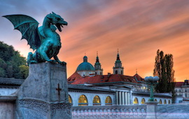
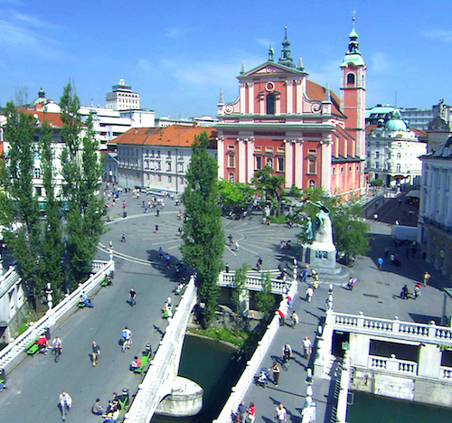

CARE-MI Project
Closing Meeting
September 17 and 18, 2015
Ljubljana, Slovenia
Registration
Background
Venue
Transport
Accommodation
Local organisation
Program
Posters (PhD and PostDocs)

Registration
Please register for the meeting by September 1, 2015. We need your registration info to print out the badges and organize the transport, the meals and the guided tour.
Background
The closing meeting of the CARE-MI EU FP7 project will be held in Ljubljana, Slovenia, on Thursday, September 17, and Friday, September 18, 2015. The meeting will feature a summary of work done in CARE-MI workpackages, presentation of student posters, an open session with a set of CARE-MI and invited lectures, and a wrap-up by group leaders of the CARE-MI participants.
Venue
The meeting will take place at the Faculty of Computer and Information Science, University of Ljubljana, Vecna pot 113, 1000 Ljubljana, Slovenia.

Accommodation
Ljubljana is one of the smallest European capitals and there are plenty hotels close to the center of the city that are also close to the workshop venue. For this meeting, we recommend any of the following hotels (from the chain of Union Hotels), from which we will also organize the transport to and from the meeting venue:
- Grand Hotel Union is a four-star hotel located at the city center, just next to the Triple Bridge, where we will start a guided tour of the old city on Thursday. Please make your reservations at one of Union`s hotels, Hotel Lev. When reserving please make sure to include the promo code "UL FRI".
- City Hotel is the second option. This three-star hotel is located about 200 meters from the Grand Hotel Union, away from the city center.

Map legend: entrances to (1) Grand Hotel Union, (2) Grand Hotel Union Business, and (3) Central Hotel, (4) Triple Bridge where we will meet for walking tour on Thursday, and (5) market place, a great place to stroll around if you are still in Ljubljana on Saturday.
Transport
Flying
You should fly to Ljubljana Airport, which has connections to most of the European hubs. This is also the only Ljubljana airport. Make sure you reserve your flight early to get the cheapest rates!
From the airport to the hotel
From the airport take a taxi, shuttle or bus to the hotel in Ljubljana. The airport is about 25 kilometers to the center of the city, which takes about half-an-hour with a taxi.From the hotel to the meeting venue
Faculty of Computer Science, our meeting venue, is about 10 minutes with a car and 40 minutes walking from the city center. We will organize a transport from and to the hotels on:| Thu 8:10 | from the entrance of Grand Hotel Union to the venue (CARE-MI executive board members) |
| Thu 9:20 | from the entrance of Grand Hotel Union to the venue |
| Thu 17:15 | from the venue to the entrance of Grand Hotel Union |
| Fri 8:40 | from the entrance of Grand Hotel Union to the venue |
| Fri 14:20 | from the entrance of Grand Hotel Union to the venue |

On the figure above: for the toughest, there is a nice walk route from the city center to the venue, but takes about 40 minutes.
To travel on your own, you can either use a car, city public transport, or a taxi to reach the venue. Bus number 18 leaves close to the hotels and goes directly to the venue (exit at the Zoo station).From the hotel to the start of the guided tour
We will start the guided tour at the Triple Bridge, next to the statue of France Presern (a guy with a muse over his head). Triple Bridge is about 100 meters to the south from the entrance of Grand Hotel Union (see the maps with hotels). On the photo below, the statue of Presern is on a slight right from the center of the image, and Grand Hotel Union is in the upper right corner, just behind the church.

Local organisation
The meeting is locally organized by Jerca Tekavec, Jasna Bevk and Blaz Zupan. Please contact us at srd (at) fri (dot) uni-lj (dot) si for any questions regarding accomodation, transport or organisation.
Program
Thursday, September 17, 2015
| 8:30 | Closed meeting by the executive board members |
| Executive board meeting | |
| 9:30 | General CARE-MI meeting with final reports by CARE-MI workpackages and workpackage leaders: a brief overview, main results, wrap-up |
| 9:45 | Blaz Zupan. Welcome by the local organizers |
| 10:00 | Antonio Bernad. Management and coordination, Dissemination and Exploitation (WP1 & WP2) |
| 10:15 | Itziar Palacios, CTPX-TGX. Optimisation of cell isolation, production and storage (WP4) |
| 10:30 | Reem Al-Daccak, HLA-MED. Immunology of allogeneic CSC therapy (WP5) |
| 10:45 | Coffee break and Poster Session |
| 11:30 | Verónica Crisóstomo, CCMIJU. Preclinical efficacy allogeneic CSC therapy in large animals (WP6) |
| 11:45 | Javier Sánchez, Phillips. Technical developments on advanced cardia MRI |
| 12:00 | Itziar Palacios, CTPX-TGX. Preclinical safety allogeneic CSC therapy (WP7) |
| 12:15 | Marie Paule Richard, CTPX-TGX. Clinical trial allogeneic therapy (WP3 & WP8) |
| 12:30 | Stefan Janssen, VIB-KU. conf pending |
| 12:45 | Okke Franssen, Nanomi. Growth Factor Therapy. Formulation & escalation (WP9) Verónica Crisóstomo, CCMIJU. Growth Factor Therapy. Preclinical safety and efficacy (WP10 - WP12) |
| 13:10 | Lunch and Poster Session |
| 14:30 | Advanced endogenous Cardias Stem Cell biology (WP13) |
| 14:30 | Margarida Serra, IBET. Human cardiac stem cells for allogeneic cell therapies: integrating bioprocess engineering and "omics" tools for better characterized cell products |
| 14:45 | Antonio Bernad, CNB-CNIC. Deep molecular characterization of CSC |
| 15:00 | Dominiziana Costamgna, KU Leuven. Muscle progenitors in dystrophic stem cell niche |
| 15:15 | Novel regeneration and maturation factors (WP14) |
| 15:15 | Wolfram Zimmermann, HMG-GOE |
| 15:30 | Geena Ellison, KCL. CSC ageing |
| 15:45 | Blaz Zupan, UL FRI |
| 16:00 | Coffee Break and Poster Session |
| 17:15 | General Assembly |
| 18:15 | Specific planned meetings to prepare final report and pending manuscripts |
| 19:00 | Transport to the hotel |
| Guided tour of the old city (starts at the Triple Bridge at the centre of the city, 200m away from Union Hotel and finishes at the restaurant) | |
| 20:30 | Dinner |
Friday, September 18
| New Frontiers in Cardiac Cell Therapy | |
| Open Session, general audience welcome (9 - 12) | |
| 9:00 | Charles Kessler. Introductory Remarks |
| Innovative therapeutic approaches and interventions regenerative medicine, EC, Brussels, Belgium | |
| 9:10 | Antonio Bernad. General introduction to Cell Therapy & Cardiac Cell Therapy |
| Immunology and oncology department, CNB-CSIC, Madrid, Spain | |
| 9:25 | Georgina Ellison. Cardiac stem cell biology |
| Centre of Human & Aerospace Physiological Sciences, Reader in Human Physiology, King`s College, London, United Kingdom | |
| 9:40 | Robert Steendam. Encapsulated factors approach |
| InnoCore Pharmaceuticals, Chief Technology Officer, Groningen, The Netherlands | |
| 9:55 | Coffee break |
| 10:30 | Dominique Sharron. The allogeneic concept |
| Laboratorie "Jean Dausset", Immunology-Immunogenetics-Histocompatibility, Université Paris-Diderot, Hôpital Saint-Louis AP-HP, Paris, France | |
| 10:45 | Blaz Zupan. Biomedical data fusion |
| Faculty of Computer and Information Science, University of Ljubljana, Slovenia | |
| 11:00 | Miomir Knezevic. Tissue-engineered for cartilage repair and vesicoureteral reflux |
| CEO of the biotech companies Educell Ltd. and Biobanka Ltd. | |
| 11:30 | Round table |
| Wolframm Zimmermann, HMG-GOE. Göttingen, Germany Eleuterio Lombardo, CTPX-TGX. Madrid, Spain Verónica Crisóstomo, CCMIJU. Cáceres, Spain Margarida Serra, IBET. Lisbon, Portugal Stefan Janssen, VIB-KU. Leuven, Belgium |
|
| 12:00 | Closing of Open Session |
CARE-MI meeting (continued) |
|
| 12:15 | Lunch break |
Lessons learned, closing thoughts and farewell by the group leaders (5 minutes each). |
|
| 13:00 |
Antonio Bernad, Fundación Centro Nacional de Investigaciones Cardiovasculares Carlos III Itziar Palacios, Coretherapix S.L. Verónica Crisóstomo, Centro de Cirugia Minimamente Invasia Jesús Usón Margarida Serra, Instituto de Biologia Experimental e Tecnológica Imanol Otaegui, Hospital Vall d'Hebron Stephan Janssen, VIB-KU Leuven Verstreken Geena Ellison, King`s College London Gert Veldhuis, Okke Franssen, Nanomi BV Rob Steendam, Innocore Wolfram Zimmermann, University Medical Center Goettingen Marc Kouwenhoven, Philips Medical Systems, N.V. (Netherlands) Javier Sánche, Philips Ibérica, S.A. (Spain) Dominique Charrón, Hôpital Saint Louis Domiziana Costamagna, Katholieke Universiteit Leuven Blaz Zupan, University of Ljubljana |
| 14:10 | Antonio Bernad. CARE-MI closing |
| 14:20 | Transport to the Hotel |
Posters
We encourage attending students and post-docs to prepare posters describing their own research work that is related to the topics of the meeting. All poster presenters will recive a special participation award from the local organizer.